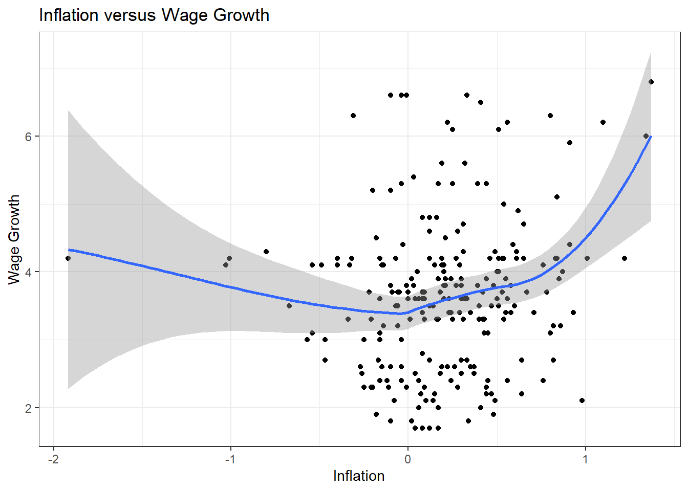
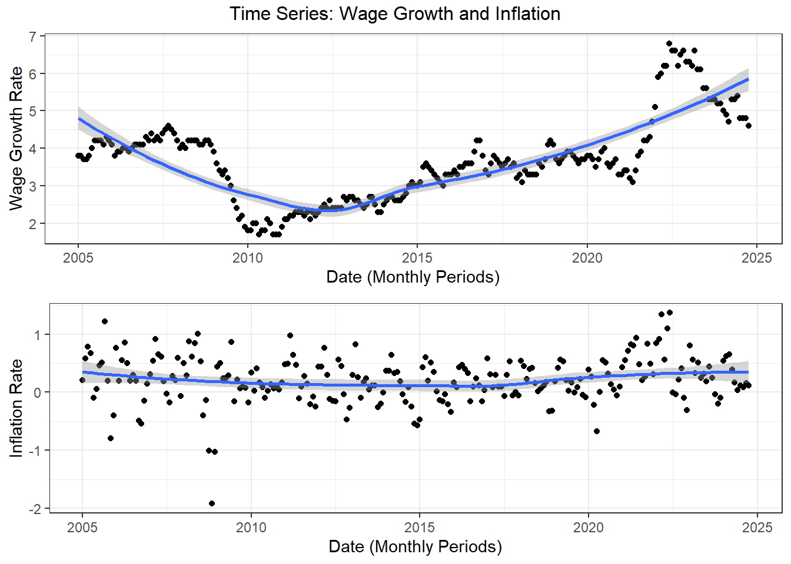
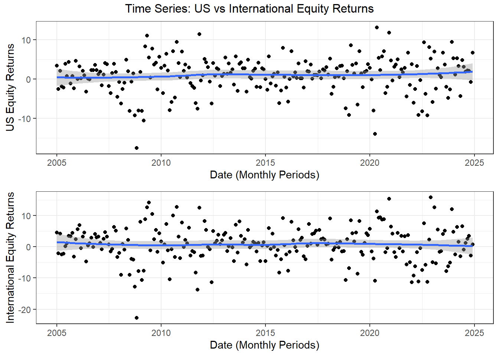
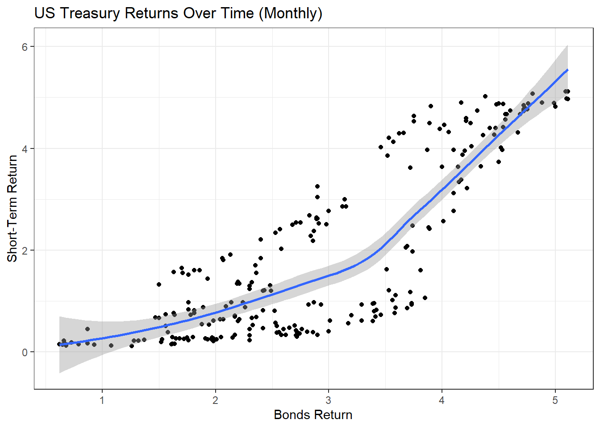
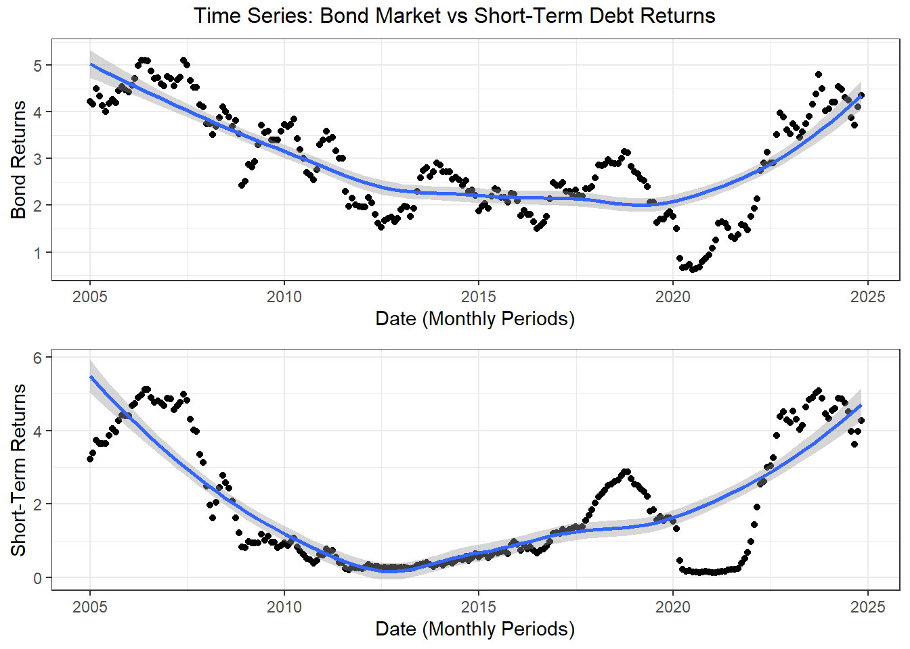
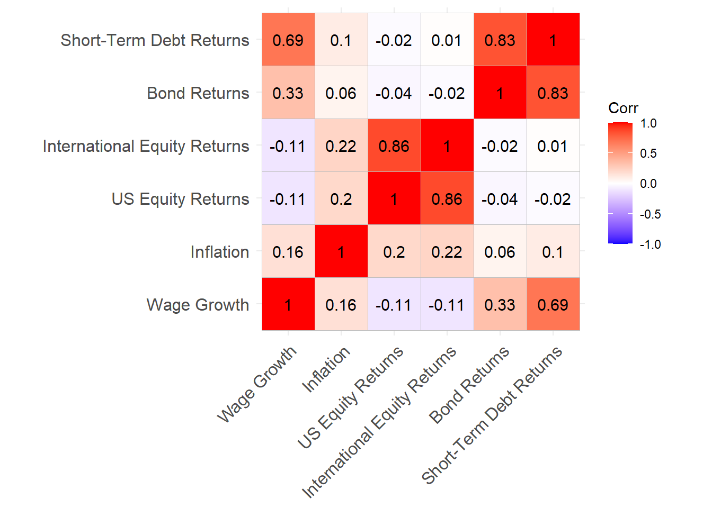
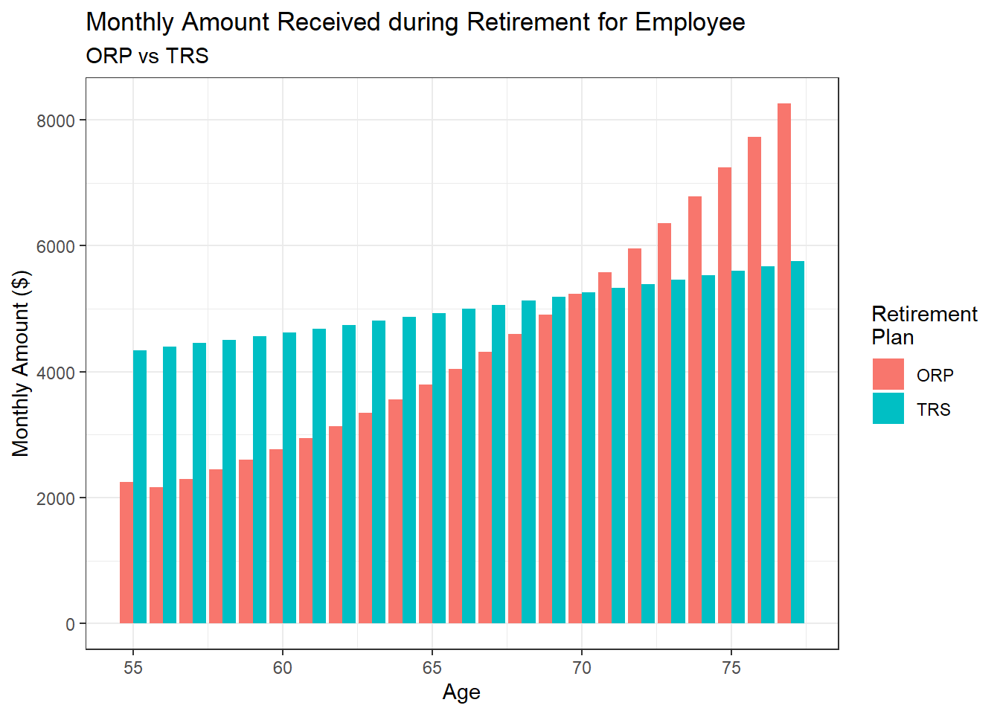

MP #04: Monte Carlo-Informed Selection of CUNY Retirement Plans
Author
Elissa Leung
Introduction
As life expectancy continues to increase, there is a greater need for long-term financial security in retirement. Individuals are compelled to start their retirement planning earlier on in their career. A retirement plan is a financial arrangement meant to help individuals save and/or invest money during their career so that this money could support them in retirement. There are various retirement plans (e.g. employer-sponsored plans, individual retirement accounts, etc.) that individuals can choose to contribute to based on various factors.
At the City University of New York (CUNY), new faculty members have 30 days to select between two retirement plans. Given the long-term nature and significance of this decision, it is one that cannot be made lightly, as it will impact their financial security for the remainder of their lives during retirement.
CUNY Retirement Plans
CUNY offers its employees a choice between two retirement plans: the traditional defined-benefit Teachers Retirement System (TRS) plan and the more recent defined-contribution Optional Retirement Plan (ORP).
Throughout this project, we will be ignoring the effect of taxes since both of these plans offer pre-tax retirement savings.
Teachers Retirement System
The TRS traditional pension plan guarantees that in retirement, the employer (CUNY) will continue paying its employees a portion of their salary until death. This is a “defined-benefit” plan as the retirement benefit the employee ultimately receives is fixed a priori and the employer ends up taking the market risk.
At CUNY, the TRS is administered as follows:
Employees pay a fixed percentage of their paycheck into the pension fund. For CUNY employees joining after March 31, 2012–which you may assume for this project–the so-called “Tier VI” contribution rates are based on the employee’s annual salary and increase as follows:
$45,000 or less: 3%
$45,001 to $55,000: 3.5%
$55,001 to $75,000: 4.5%
$75,001 to $100,000: 5.75%
$100,001 or more: 6%
The retirement benefit is calculated based on the Final Average Salary of the employee: following 2024 law changes, the FAS is computed based on the final three years salary. (Previously, FAS was computed based on 5 years: since salaries tend to increase monotonically over time, this is a major win for TRS participants.)
If N is the number of years served, the annual retirement benefit is:
1.67\% * \text{FAS} * N if N \leq 20
1.75\% * \text{FAS} * N if N = 20
(35\% + 2\% * N) * \text{FAS} if N \geq 20
In each case, the benefit is paid out equally over 12 months.
The benefit is increased annually by 50% of the CPI, rounded up to the nearest tenth of a percent: e.g., a CPI of 2.9% gives an inflation adjustment of 1.5%. The benefit is capped below at 1% and above at 3%, so a CPI of 10% leads to a 3% inflation adjustment while a CPI of 0% leads to a 1% inflation adjustment.
The inflation adjustement is effective each September and the CPI used is the aggregate monthly CPI of the previous 12 months; so the September 2024 adjustment depends on the CPI from September 2023 to August 2024.
Optional Retirement Plan
In CUNY’s ORP option, the plan is more similar to the more commonly known 401(k) plan. In this plan, both the employee and employer contribute to the retirement account, which will then be invested into the employee’s choice of mutual funds (e.g. US equities, International equities, bonds, short-term debts, etc.). These investments continue to grow “tax-free” over the course of their career and in retirement until they are withdrawn. The employee takes a larger risk in this plan as once they retire and begin withdrawing funds, once the account dries up, there are no more additional funds. However, if their investment grows large enough they may have additional funds to pass down to immediate family upon death. The ORP is a defined-contribution plan since only the contributions during the employee’s career is fixed, the final balance depends on the market.
During retirement, employees have the choice of accessing and withdrawing funds at any rate, but with the nature of this retirement plan it is important to make rational withdrawal decisions. For this project, we will assume that the employee will be withdrawing 4% of the account’s value per year (Schwab discussion).
The funds available in a ORP account depend strongly on the investments chosen. For this analysis, you can assume that the ORP participants invest in a Fidelity Freedom Fund with the following asset allocation:
Age 25 to Age 49:
54% US Equities
36% International Equities
10% Bonds
Age 50 to Age 59:
47% US Equities
32% International Equities
21% Bonds
Age 60 to Age 74:
34% US Equities
23% International Equities
43% Bonds
Age 75 or older:
19% US Equities
13% International Equities
62% Bonds
6% Short-Term Debt
Under the ORP, both the employee and the employer make monthly contributions to the employee’s ORP account. These contributions are calculated as a percentage of the employee’s annual salary. Specifically, the employee contributes at the same rate as the TRS:
$45,000 or less: 3%
$45,001 to $55,000: 3.5%
$55,001 to $75,000: 4.5%
$75,001 to $100,000: 5.75%
$100,001 or more: 6%
The employer contribution is fixed at:
8% for the first seven years of employment at CUNY.
10% for all years thereafter.
We will assume that the contributions from the employee and employer are immediately invested based on the asset allocations above.
The goal for this project is to use historical financial data and a bootstrap inference strategy to compare CUNY’s two retirement plans and provide data-driven recommendations for CUNY employees’ retirement planning.
We will be using data from two economic and financial data sources, AlphaVantage and the Federal Reserve Economic Data repository. AlphaVantage is a commercial stock market data provider that provides users with APIs for real-time and historical market data. While the Federal Reserve Economic Data (FRED) repository is an online database maintained by the Federal Reserve Bank of St. Louis, allowing users access to various economic data and financial indicators.
Data Sources
For this project, we will be accessing data from both AlphaVantage and FRED through their password-protected APIs. Before accessing these APIs, we will need to register for API keys for each of the respective APIs: AlphaVantage registration and FRED registration.
Below are some useful packages we will need to utilize throughout the project in our retirement planning analysis.
Code
# Install necessary packagesif(!require("dplyr")) install.packages("dplyr")if(!require("tidyverse")) install.packages("tidyverse")if(!require("sf")) install.packages("sf")if(!require("haven")) install.packages("haven")if(!require("DT")) install.packages("DT")if(!require("gt")) install.packages("gt")if(!require("ggplot2")) install.packages("ggplot2")if(!require("RColorBrewer")) install.packages("RColorBrewer")if(!require("stringr")) install.packages("stringr")if(!require("patchwork")) install.packages("patchwork")if(!require("gganimate")) install.packages("gganimate")if(!require("zoom")) install.packages("zoom")if(!require("gridExtra")) install.packages("gridExtra")if(!require("httr2")) install.packages("httr2")if(!require("readxl")) install.packages("readxl")if(!require("ggcorrplot")) install.packages("ggcorrplot")# Load packages into Rlibrary(dplyr)library(tidyverse)library(sf)library(haven)library(DT)library(gt)library(ggplot2)library(RColorBrewer) # different color palette optionslibrary(stringr)library(patchwork) # inset plotslibrary(gganimate)library(zoom) # zoom for plotslibrary(gridExtra) # labels outside the plotlibrary(httr2)library(readxl) # reading excel fileslibrary(ggcorrplot) # correlation matrices
Loading API Keys
Once we’ve registered and received our unique API keys, we will need to load these keys, so that we can access them later as we send requests to get data from the APIs.
Below is the code to load in my personal API keys (replace with your individual key) for each of the APIs.
Once we’ve registered and received our API keys for each data source, we can now set up and send requests to the APIs to retrieve the necessary data sources for our analysis.
Data Acquisition
Before beginning this project, we will need to retrieve some historical economic and financial data from the AlphaVantage and FRED APIs. More specifically, we will be retrieving data covering:
Wage Growth
Inflation
US Equities
International Equities
Bond
Short-Term
For each of these data set retrievals, we will be utilizing the functions from the httr2 package. First, we will need to set up an API request with the request() function, we will define the URL and set up the respective parameters for the metrics we want to retrieve based on each API’s documentation (AlphaVantage documentation and FRED documentation). Then, after performing the request, we will need to read in the content from the API response. The data from AlphaVantage’s API can be formatted into a csv file, in which case we will use the read_csv() function. Whereas FRED’s API provides a slightly more challenging .zip Excel file format, in which case we will need to unzip the folder and read in the file with read_excel() from the readxl package.
Below are the 6 data sets retrieved from either the AlphaVantage or FRED API’s. There are various data sets to choose from for each of these metrics, the choice made is dependent on various factors such as the extent of historical data.
Wage Growth
For the wage growth data, we will retrieve data from the FRED API. Using the series_id = FRBATLWGT3MMAUMHWGWSFT, we will get the Wage Growth Tracker for Job Switchers, 3-Month Moving Average, Unweighted, Median Hourly Wage. This data set provides information on wage growth from 1997 to 2024.
For our inflation data set, we will be retrieving the Consumer Price Index (CPI) of the United States data from the AlphaVantage API. The CPI measures the average change over time in the prices for a basket of goods and services purchased by consumers. Later, we will calculate the change in CPI to determine the inflation rates per period.
# Renaming the column for ease of JOINs latercpi <- cpi_csv |>rename(cpi ='value')
US Equity Market Returns
We will retrieve data on the US Equity market through the AlphaVantage API. Using AlphaVantage’s TIME_SERIES_MONTHLY_ADJUSTED function, we can retrieve data on the Vanguard Total Stock Market ETF (symbol = VTI) to represent the US Equity historical market returns for our project. This data set provides monthly data from 2001 to 2004 on the US Equity market.
We will also retrieve data on the International Equity market through AlphaVantage. Similarly, using AlphaVantage’s TIME_SERIES_MONTHLY_ADJUSTED function, we can retrieve data on the Vanguard International Growth Fund Investor Shares (symbol = VWIGX) to represent the International Equity historical market returns for our project. This data set provides monthly data from 1999 to 2004 on the US Equity market.
For the historical bond market values, we will use AlphaVantage’s TREASURY_YIELD function and set maturity at 10year for our API request. The resulting data set provides monthly data on the interest rates that investors earn on bonds from 1953 to 2024. We will use this data set to represent historical bond values.
Lastly, for short-term debt values, we will also use AlphaVantage’s TREASURY_YIELD function, however, now we will set maturity at 2year for our API request. The resulting data set provides monthly data on the the interest rates that investors earn on short-term debt from 1976 to 2024. We will use this data set to represent historical short-term debt values.
Before beginning our retirement plan comparison analysis, we will do some preliminary exploration analysis on the 6 data sets imported to get familiar with our data. For the purposes of this project and to maintain consistency, we will only use data from the last 20 years (2005-2024).
Let’s first take a look at the wage growth and inflation data sets. Taking a look at the wage growth and inflation data simultaneously gives us a better understanding of the purchasing power and living standards of each specific time period. Both these metrics will be important for individuals’ financial planning throughout their career.
Below is the data frame combining the two metrics and calculate the inflation based on the change in CPI per month.
Code
comparison_inflation_vs_wage_growth <-inner_join(wage_growth_data, cpi, join_by('observation_date'=='timestamp')) |>arrange(observation_date) |>mutate(inflation =round(((cpi -lag(cpi)) /lag(cpi)) *100, 2)) |>drop_na() |>filter(year(observation_date) >2004) # We will only be working with data from the past 20 years
Taking a look at the scatter plot between inflation and wage growth, there doesn’t seem to be any correlation between the two metrics, as most of the data is randomly scattered with no obvious pattern or trend.
Code
comparison_inflation_vs_wage_growth |>ggplot(aes(x = inflation, y = wage_growth)) +geom_point() +geom_smooth() +theme_bw() +labs(title ="Inflation versus Wage Growth",x ="Inflation",y ="Wage Growth")

Next, let’s take a closer look at the time-series plots for each of these metrics.
In the wage growth scatter plot, we can observe that between about 2005 and 2008, the wage growth fluctuates slightly between about 3.5% and 4.5%. However, there is a significant dip in wage growth afterwards until late 2010 to under 2%. The remainder of the wage growth percentages generally increase from 2010 onwards.
In the inflation scatter plot, inflation seems to remain consistently between -1% and 1% for most periods, with less of a pattern compared to the wage growth plot. However, there are a few outliers, notably in 2008-10-01, 2008-11-01, 2008-12-01, where the inflation rate drops below -1%. Given that there was a recession in 2008 during the Global Financial Crisis, these values make sense.
Code
wage_growth_scatter <- comparison_inflation_vs_wage_growth |>ggplot(aes(x = observation_date, y = wage_growth)) +geom_point() +geom_smooth() +theme_bw() +labs("Wage Growth Rate Over Time (Monthly)",x ="Date (Monthly Periods)",y ="Wage Growth Rate")inflation_scatter <- comparison_inflation_vs_wage_growth |>ggplot(aes(x = observation_date, y = inflation)) +geom_point() +geom_smooth() +theme_bw() +labs("Inflation Rate Over Time (Monthly)",x ="Date (Monthly Periods)",y ="Inflation Rate")grid.arrange(wage_growth_scatter, inflation_scatter, top ="Time Series: Wage Growth and Inflation")

Next, we will take a look at the equities market return fluctuations and compare the US Equity market with the International Equity market from 2005 to 2024.
Below is the data frame that joins the two data tables US equity and international equity and calculates the returns for each equity market.
Code
# Join all the monthly market data together# Adjusting the date in the equities data to the first of the month for simplicity of JOINs (Ex: January 31 will become February 1, and so on)equities <-inner_join(us_equity, int_equity, by ='timestamp') |>arrange(timestamp) |>mutate(us_equity_returns =round(((us_equity_adj_close -lag(us_equity_adj_close)) /lag(us_equity_adj_close)) *100, 2),int_equity_returns =round(((int_equity_adj_close -lag(int_equity_adj_close)) /lag(int_equity_adj_close)) *100, 2)) |>mutate(timestamp =ceiling_date(timestamp, "month")) |>select(-c('us_equity_adj_close', 'int_equity_adj_close')) |>filter(year(timestamp) >2004)
Then, we plot the US Equity market returns against the International Equity market returns. From a preliminary observation of the scatter plot, there seems to be a strong positive correlation between these two metrics. This may indicate a pattern that as the US Equity market returns increase so does the International Equity’s market returns. These markets are likely highly correlated due to factors like global events and/or policies that may impact these markets simultaneously.
Let’s also take a look at the time-series for the returns of each equity market. Below, we can observe that each of these markets have a relatively constant fluctuation over time. Both smooth lines plotted for each scatter plot remain around the 0% return line, indicating that the market returns are centered around 0 and a lack of a discernible trend over time. For the US Equity market, most of the returns remain within -10% and 10%. However, there is a noticeable outlier in the US Equity market on 2008-11-01 with a return of -17.48%. Similarly, in the same period, the International Equity market experienced returns of -22.81%. Both of these lulls occurring in 2008 during the Global Financial Crisis.
Code
us_equity_scatter <- equities |>ggplot(aes(x = timestamp, y = us_equity_returns)) +geom_point() +geom_smooth() +theme_bw() +labs("US Equity Returns Over Time (Monthly)",x ="Date (Monthly Periods)",y ="US Equity Returns")int_equity_scatter <- equities |>ggplot(aes(x = timestamp, y = int_equity_returns)) +geom_point() +geom_smooth() +theme_bw() +labs("International Equity Returns Over Time (Monthly)",x ="Date (Monthly Periods)",y ="International Equity Returns")grid.arrange(us_equity_scatter, int_equity_scatter, top ="Time Series: US vs International Equity Returns")

Lastly, we will be exploring the treasuries market, more specifically, we’ll compare the bond returns against the short-term debt returns from 2005 to 2024.
Below is the code joining the two tables together into one us treasuries table.
Code
us_treasury_comparison <-inner_join(bond, short_term, by ="timestamp") |>filter(year(timestamp) >2004) |>arrange(`timestamp`)
First, we’ll take a look at the bonds vs the short-term debt returns scatter plot. There seems to be, for the most part, a strong positive correlation between these two metrics. Both these returns are sensitive to interest rate changes and market conditions, so their returns may end up synchronized.
Code
us_treasury_comparison |>ggplot(aes(x = bond_value, y = short_term_value)) +geom_point() +geom_smooth() +theme_bw() +labs(title ="US Treasury Returns Over Time (Monthly)",x ="Bonds Return",y ="Short-Term Return")

Then, taking a look at the time-series for the bond returns and the short-term debt returns, we have that they have a similar general trend of starting off high, then decreasing for a while before increasing again. In both plots, there is an obvious dip in returns between 2020 and 2022, which is likely due to the global pandemic that severely impacted global economies.
Code
bond_scatter <- us_treasury_comparison |>ggplot(aes(x = timestamp, y = bond_value)) +geom_point() +geom_smooth() +theme_bw() +labs("Bond Returns Over Time (Monthly)",x ="Date (Monthly Periods)",y ="Bond Returns")short_term_scatter <- us_treasury_comparison |>ggplot(aes(x = timestamp, y = short_term_value)) +geom_point() +geom_smooth() +theme_bw() +labs("Short-Term Returns Over Time (Monthly)",x ="Date (Monthly Periods)",y ="Short-Term Returns")grid.arrange(bond_scatter, short_term_scatter, top ="Time Series: Bond Market vs Short-Term Debt Returns")

The last thing, I would like to explore is the actual calculated correlation coefficient between each of these metrics. Before running the correlation, we will need to join all the tables into one, all_metrics table for ease of accessibility. Next, using the ggcorrplot package, we can calculate the correlation between each of the factors and plot this onto a correlation heat map matrix.
Code
# All metrics in one data frame to calculate correlations between each metricall_metrics <- comparison_inflation_vs_wage_growth |>inner_join(equities, join_by("observation_date"=="timestamp")) |>inner_join(us_treasury_comparison, join_by("observation_date"=="timestamp")) |>select(-c("cpi")) |>drop_na()# Correlation Matrixcorr_matrix <- all_metrics |>select(-c("observation_date")) |>rename(`Wage Growth`= wage_growth,Inflation = inflation,`US Equity Returns`= us_equity_returns,`International Equity Returns`= int_equity_returns,`Bond Returns`= bond_value,`Short-Term Debt Returns`= short_term_value) |>cor() |>round(digits =2)corr_matrix |>ggcorrplot(lab =TRUE)

Similar to the analysis we did prior to this, there is a strong positive correlation between US Equity returns and International Equity returns with a correlation coefficient of 0.86 and also a strong positive correlation between Bond returns and Short-Term Debt returns with a correlation coefficient of 0.83. An additional interesting observation is that there is a relatively strong positive relationship between wage growth and short-term debt returns as well, with a correlation coefficient of 0.69. The remaining values indicate a weak or even non-discernible correlation.
To take a closer look at each metric, we will summarize each metric’s monthly data into annual summaries. Since our wage growth data, bond value data, and short-term value data are all annual percentages, we will take the average between the 12-month period for the aggregate value. On the other hand, our inflation, US equity return, and International equity return data are monthly values, so we will follow the formula:
Aggregate = (\prod (1 + value / 100)) - 1
Where value represents either inflation, US equity return or International equity return.
Below is the data table that shows all of our aggregated values for each of the metrics for each year of data we will be utilizing in our calculations. Taking a look at some of the data we saw that stood out in some of the scatter plots earlier, we can see that in 2008, there was an average market return of -38.51% for the US Equity market and a -50.01% for the International equity market. Inflation also took a hit at 0.1% compared to the 4.08% from 2007.
Additionally, before we compute estimated retirement projections, we will need to calculate long-run averages for each metric (wage growth, inflation, US equity returns, International equity returns, bond returns, short-term debt returns). Since we do not have information on the future, we will be using the long-run average of each metric to project the CUNY employee’s retirement based on certain assumptions.
Below is the data frame containing all the long-run averages for each metric. At first glance, the long-run average market returns for each of the equity markets seem a little aggressive, but based on the averages from the table above, the various global events and market dynamics, it checks out. Comparatively, both the long-run averages for the bond returns and short-term debt returns are lower at 2.91% and 1.91%, which makes sense given that these assets are less risky and typically provide less aggressive returns.
Now that we’ve retrieved our data sets and performed some preliminary exploratory analysis, we can begin our CUNY retirement plan analysis. For this analysis, we will implement the TRS and ORP formulas introduced earlier, utilizing the data sets we obtained from AlphaVantage and FRED to represent market fluctuations over time. Before beginning analysis we will need to make a few assumptions for our CUNY employee. We will assume that our hypothetical CUNY employee:
Joined CUNY in January of 2005 at age 35 with a starting salary of $50,000
Retired from CUNY at the end of October 2024 at age 54
Worked for 20 years in CUNY
Dies at age 77
We will first calculate the CUNY employee’s salary each year of their career (2005-2024) based on our annual aggregated wage growth and inflation data. To adjust for wage growth, we will follow the following formula:
salary_w = salary_p * (1 + (WG / 100))
Where:
salaryp: salary from the previous year
WG: wage growth percentage
salaryw: salary after wage growth adjustments
Then, to adjust for yearly inflation, we will use:
salary_f = \frac{salary_w}{1-(i/100)}
Where:
salaryw: salary after wage growth adjustments
i: inflation rate
salaryf: final salary after wage growth and inflation adjustments
Below is the data frame containing all the final calculations for salary based on the wage growth rate and inflation rate data. Based on our calculations, in about 15 years, the employee will have doubled their starting salary to $102,242.56. By the time the employee retires in 20 years, they would have tripled their initial starting salary at $161,085.94.
Now, based on these salary calculations we will run our simulation for each retirement plan and compare each of values at the first month of retirement.
TRS
For the TRS retirement plan, the employee will pay a fixed percentage of their paycheck into the pension fund, based on the following contribution rates and annual salary brackets:
$45,000 or less: 3%
$45,001 to $55,000: 3.5%
$55,001 to $75,000: 4.5%
$75,001 to $100,000: 5.75%
$100,001 or more: 6%
Below is the code calculating the total contributions the employee provides to the pension each year of their career at CUNY.
After 20 years of employment with CUNY, under the TRS pension plan, this employee would have contributed a total of $97,049.99.
Next, we’ll need to calculate the employee’s final average salary (FAS) based on their salary in their last three years of employment, so in this case it would be 2022, 2023, and 2024. The final average salary based on these three years of employment came out to $148,763.44. We will then use this FAS towards calculating the employee’s annual retirement benefit. We will consider the following cases when calculating the first year’s retirement benefit:
1.67\% * \text{FAS} * N if N \leq 20
1.75\% * \text{FAS} * N if N = 20
(35\% + 2\% * N) * \text{FAS} if N \geq 20
Since our employee worked for 20 years, we will be using the second formula to calculate their initial retirement benefit.
Code
# 2. The retirement benefit is calculated based on the Final Average Salary of the employee (last three years of work)final_average_salary <- yearly_salary_df |>arrange(year) |>slice_tail(n =3) |>summarize(fas =round(mean(salary), 2)) |>pull(fas)retirement_benefit_trs <-round(case_when(nrow(yearly_salary_df) <20~0.0167* final_average_salary *nrow(yearly_salary_df),nrow(yearly_salary_df) ==20~0.0175* final_average_salary *nrow(yearly_salary_df),nrow(yearly_salary_df) >20~ (0.35+0.2*nrow(yearly_salary_df)) * final_average_salary,), 2)
After all calculations, we will find that the employee will receive an annual retirement payment in 2025 of $52,067.2, or a monthly payout of $4,338.93.
Next, we will take a look at the first month’s payout from CUNY’s Optional Retirement Plan (ORP).
ORP
In the CUNY ORP, the employees contribute at the same rate as the TRS, with the following brackets:
$45,000 or less: 3%
$45,001 to $55,000: 3.5%
$55,001 to $75,000: 4.5%
$75,001 to $100,000: 5.75%
$100,001 or more: 6%
However, now the employee’s are contributing directly to their own retirement into their ORP account. Their employers, CUNY in this case, will also contribute a fraction of their employee’s salary based on these conditions:
8% for the first seven years of employment at CUNY.
10% for all years thereafter.
Below is the code to create the data frame containing all the employee and employer contributions based on salary and years of employment from 2005 to 2024.
ORP is a retirement plan that invests these contributions into the employee’s choice of mutual funds, for this project, we will assume that our employee invests in a Fidelity Freedom Fund, which allocates assets the following way:
Age 25 to Age 49:
54% US Equities
36% International Equities
10% Bonds
Age 50 to Age 59:
47% US Equities
32% International Equities
21% Bonds
Age 60 to Age 74:
34% US Equities
23% International Equities
43% Bonds
Age 75 or older:
19% US Equities
13% International Equities
62% Bonds
6% Short-Term Debt
So, based on the age of the employee, we will need to allocate the annual contributions accordingly. We will also need to account for the market fluctuation of each of these assets. So we’ll use the annual aggregated data for each of the markets (US Equity, International Equity, Bonds, and Short-Term Debts) to adjust the retirement account balance before the start of the following year.
Below is the code to calculate all the above steps and to ultimately calculate the final balance once the employee retires and stops contributing.
Code
# Vectors from the data frame to run a for loop on to calculate total retirement benefit by the time of retirementage <- orp_account$agetotal_contributions <- orp_account$total_contributions# Vectors for each market's returnsus_equity_yearly <- all_metrics_summary$annual_us_equity_returnsint_equity_yearly <- all_metrics_summary$annual_int_equity_returnsbond_yearly <- all_metrics_summary$annual_bond_valueshort_term_yearly <- all_metrics_summary$annual_short_term_value# Initially no investment into any of these assetsus_equities_total <-0int_equities_total <-0bonds_total <-0short_term_total <-0for (i in1:20) {# Asset allocation based on age of employeeif (age[i] >=25& age[i] <50) { us_equities_total <- us_equities_total + total_contributions[i] *0.54 int_equities_total <- int_equities_total + total_contributions[i] *0.36 bonds_total <- bonds_total + total_contributions[i] *0.1 short_term_total <- short_term_total } elseif (age[i] >=50& age[i] <60) { us_equities_total <- us_equities_total + total_contributions[i] *0.47 int_equities_total <- int_equities_total + total_contributions[i] *0.32 bonds_total <- bonds_total + total_contributions[i] *0.21 short_term_total <- short_term_total } elseif (age[i] >=60& age[i] <75) { us_equities_total <- us_equities_total + total_contributions[i] *0.34 int_equities_total <- int_equities_total + total_contributions[i] *0.23 bonds_total <- bonds_total + total_contributions[i] *0.43 short_term_total <- short_term_total } elseif (age[i] >=75) { us_equities_total <- us_equities_total + total_contributions[i] *0.19 int_equities_total <- int_equities_total + total_contributions[i] *0.13 bonds_total <- bonds_total + total_contributions[i] *0.62 short_term_total <- short_term_total * total_contributions[i] *0.06 }# Need to account for market returns for each asset, will use long run average us_equities_total <-round(us_equities_total * (1+ us_equity_yearly[i] /100), 2) int_equities_total <-round(int_equities_total * (1+ int_equity_yearly[i] /100), 2) bonds_total <-round(bonds_total * (1+ bond_yearly[i] /100), 2) short_term_total <-round(short_term_total * (1+ short_term_yearly[i] /100), 2)}orp_total_investment <- us_equities_total + int_equities_total + bonds_total + short_term_total# General rule of thumb is withdrawing 4% of the value per yearfirst_month_withdrawal <-round((orp_total_investment *0.04) /12, 2)
After working for 20 years, the CUNY employee would end up with a total of $675,728.3 in their ORP retirement account. Typically, individuals would withdraw about 4% of their retirement account’s value per year. So, we will take the assumption that our individual will withdraw 4% of their ORP account every year until they pass away. Thus, for their first month of retirement, they would withdraw $2,252.43.
Comparing the first month’s retirement payout for each plan, we find that the TRS plan provides a bigger payout than the ORP, with $4,338.93 versus $2,252.43 from the ORP. While the TRS plan has shown its benefits in early retirement stages as compared to ORP, it still is not yet clear which plan will be most beneficial in the long term.
Next, we will take a look at the long-term average analysis, with future projections of our data based on the long-run averages we calculated earlier.
Long-Term Average Analysis
The “first month of retirement” dollar value provides little insight, as it is not representative of the funds that will support the employee throughout the entire retirement period. The TRS will always guarantee an income for the remainder of an employee’s life, while the ORP carries more market risk and can be exhausted if the employee lives a very long time in retirement.
For the purposes of this projection, we will take the assumption that our hypothetical employee will die at age 77, 23 years after retirement.
We will modify our above simulation to project the employee’s retirement benefit from the TRS plan and the annual withdrawal amount from retirement (55) until death (77). To accommodate the necessary cost-of-living-adjustments for the TRS and the future market returns (ORP), we will use the long-run averages from earlier. As mentioned earlier, this “fixed rate” assumption is not entirely representative of the possible future values, but we will accommodate this in a later section.
For the TRS retirement plan, the first year’s retirement benefit is calculated as mentioned above as:
1.67\% * \text{FAS} * N if N \leq 20
1.75\% * \text{FAS} * N if N = 20
(35\% + 2\% * N) * \text{FAS} if N \geq 20
(where the FAS is the final average salary of the LAST THREE years of employment).
Following this, for the remainder of retirement, the benefit is increased annually by 50% of the CPI, but this is capped at 1% and 3%.
Accommodating the above conditions, below is the code calculating the annual and monthly retirement benefit that a CUNY employee would receive in retirement with the TRS plan.
Code
# Current age: 55# Estimated death age: 77# Long Run Averages:inflation_avg <- long_run_averages$long_run_inflationyearly_retire_benefit <- retirement_benefit_trscol_trs <-c("age", "annual_retirement_benefit", "monthly_payout")trs_retirement <-data.frame(matrix(nrow =0, ncol =length(col_trs)))for (i in55:77) { monthly_pay <-round(yearly_retire_benefit /12, 2) trs_retirement <-rbind(trs_retirement, c(i, yearly_retire_benefit, monthly_pay))# CPI adjustment for the next year, using long run inflation average adjusted_benefit <-case_when( inflation_avg /2<1~round(yearly_retire_benefit *1.01, 2), inflation_avg /2>3~round(yearly_retire_benefit *1.03, 2),.default =round(yearly_retire_benefit * (1+ ((inflation_avg /2) /100)) , 2)) yearly_retire_benefit <- adjusted_benefit}colnames(trs_retirement) = col_trsDT::datatable(setNames(trs_retirement, c("Age", "Annual Payout", "Monthly Payout")), caption ="Table 6: Employee's TRS Plan Payout in Retirement",rownames =FALSE)
From this TRS projection, we can observe that the employee’s annual payout remains between about $52,000 and $70,000 until their time of death. So, while the value of their annual payout does not increase much over time, they are guaranteed a decent share of income each year, about $4,000-$6,000 a month. However, upon death, there are no more benefits for the employee’s family, which is something else one may want to consider when selecting a retirement plan.
Next, we’ll take a look at the future projections for the CUNY ORP. For this plan, the contributions end once the employee retires, however, the retirement account continues to fluctuate based on market behaviors, which can lead to very positive returns if the market is strong.
Below is the code for the data frame which assumes a 4% withdrawal rate for each year and applies the appropriate market fluctuations for each year of retirement based on our long-run averages calculated earlier.
Code
# Current age: 55# Estimated death age: 77# Long Run Averages:us_equity_avg <- long_run_averages$long_run_us_equity_returnsint_equity_avg <- long_run_averages$long_run_int_equity_returnsbond_avg <- long_run_averages$long_run_bond_valueshort_term_avg <- long_run_averages$long_run_short_term_valueremaining_total <- orp_total_investmentremaining_us <- us_equities_totalremaining_int <- int_equities_totalremaining_bond <- bonds_totalremaining_short_term <- short_term_totalcol_orp <-c("age", "yearly_withdrawal", "monthly_withdrawal", "remaining_us_equities_amount", "remaining_int_equities_amount", "remaining_bond_amount", "remaining_short_term_amount", "remaining_amount")orp_retirement <-data.frame(matrix(nrow =0, ncol =length(col_orp)))for (i in55:77) {if (remaining_total >=0) { year_withdrawal <-round(remaining_total *0.04, 2) month_withdrawal =round(year_withdrawal /12, 2) remaining_us <-round(remaining_us *0.96, 2) remaining_int <-round(remaining_int *0.96, 2) remaining_bond <-round(remaining_bond *0.96, 2) remaining_short_term <-round(remaining_short_term *0.96, 2) remaining_total <-round(remaining_us + remaining_int + remaining_bond + remaining_short_term, 2) orp_retirement <-rbind(orp_retirement, c(i, year_withdrawal, month_withdrawal, remaining_us, remaining_int, remaining_bond, remaining_short_term, remaining_total))# Need to adjust the total based on market fluctuations remaining_us <-round(remaining_us * (1+ us_equity_avg /100), 2) remaining_int <-round(remaining_int * (1+ int_equity_avg /100), 2) remaining_bond <-round(remaining_bond * (1+ bond_avg /100), 2) remaining_short_term <-round(remaining_short_term * (1+ short_term_avg /100), 2) } else {print(paste0("No More Funds! Stopped at age ", i))break }}colnames(orp_retirement) = col_orpDT::datatable(setNames(orp_retirement, c("Age", "Yearly Withdrawal", "Monthly Withdrawal", "Remaining in US Equities", "Remaining in International Equities", "Remaining in Bonds", "Remaining in Short-Term Debts", "Total Remaining")), caption ="Table 7: Employee's ORP Withdrawal in Retirement",rownames =FALSE)
Based on the above table, we observe that the annual and monthly withdrawals initially are less than that of the TRS plan. However, over time, these withdrawals start exceeding the TRS payouts. Additionally, based on our market fluctuation assumptions, we have that at the time of death, the employee’s retirement account has grown to over $2,500,000, money that can be passed down to their family (e.g. spouse, heirs, etc.), something that the TRS plan does not offer. In this above case, the risk taken for the ORP plan has paid off significantly, allowing the employee to live comfortably during retirement and have money leftover for their family upon their death.
Below, we will take a closer look at the comparison of minimum, maximum, and average monthly payouts between the TRS and the ORP retirement plans.
From table 8, we find that the minimum monthly payout for TRS is higher than that of the ORP retirement plan, by about $2,000. On the other hand, the maximum ORP monthly withdrawal reaches as high as $8,255.70, compared to only $5752.38 from the TRS, demonstrating an instance of a positive market return over 23 years for the ORP. The average monthly payout between each plan is much closer, with TRS edging out slightly at $5,013.99 compared to ORP’s $4,448.13.
To take a closer look at the gaps between monthly payouts between each retirement plan for each year of the employee’s retirement, we will create the following data frame.
From this data table, there is a more evident pattern between the differences in monthly payouts by retirement plan. In the first 16 years of the employee’s retirement, the TRS retirement plan edges ahead of ORP by a range of about $27 to as much as $2,100. After the employee turns 71, the ORP takes the lead until their death from a range of $255 to over $2,500 at the time of death. So while the TRS provides a steady stream of income to their employee’s during retirement, taking the risk with the ORP may pay out better in the long term.
Below is a bar plot providing a clearer distinction between the monthly payouts/withdrawals of each plan over the course of the employee’s retirement.
Code
monthly_amount |>pivot_longer(!age, names_to ="plan", values_to ="monthly_amt") |>ggplot(aes(x = age, y = monthly_amt, fill = plan)) +geom_bar(stat ="identity", position =position_dodge()) +labs(title ="Monthly Amount Received during Retirement for Employee",subtitle ="ORP vs TRS",x ="Age",y ="Monthly Amount ($)") +theme_bw() +scale_fill_discrete(name ="Retirement\nPlan", labels =c("ORP", "TRS"))

Like we observed earlier, we find that the ORP takes over with the higher amount of monthly pay out from TRS when our employee turns 71, but of course this is with our long-run average assumptions for market returns which can be limiting.
Each retirement plan has different advantages and disadvantages based on various factors. TRS provides their retirees with a guaranteed comfortable salary until their death, but does not provide any funds beyond this. ORP retirement accounts will fluctuate with the market and does not guarantee a payout every year of retirement. However, if the market works in your favor more times than not, retirees may have money saved even beyond their death to pass down to family.
Before providing our recommendation, we will run a few more simulations using bootstrap sampling to gain a larger perspective on each retirement plan.
Bootstrap (Monte Carlo) Comparison
Our findings above are limited based on long-run averages calculated from the original data we retrieved. To mitigate this, we will use our historical data to generate 200 bootstrap histories for a Monte Carlo analysis. We will use bootstrap sampling to generate the values for the “while working” and the “while retired” periods of the model. More specifically, we will be generating values with bootstrapping for all the data we originally retrieved from the APIs (wage growth, inflation, US equity returns, International equity returns, bond returns, short-term debt returns). So we will no longer be assuming the same constant long-term average values for the retirement predictions.
TRS
Below is the code used to simulate the TRS retirement plan for our new 200 bootstrap samples. We will set our “seed” to 100, to allow replication of our results in the future. We will store each of our 200 data frames in the list trs_bootstrap_histories, for ease of access later.
Code
set.seed(100) # maintains the same randomness each time we run the code# Wage Growthall_metrics_summary_no_yr <- all_metrics_summary |>select(-c("year"))num_bootstraps <-200# want to run 200 "bootstrap histories"trs_bootstrap_histories <-list() # Create a list to fill with all the ORP bootstrap data framesfor (i in1:num_bootstraps) {# Create new bootstrap sample of the data bootstrap_df <- all_metrics_summary_no_yr |>slice_sample(n =nrow(all_metrics_summary_no_yr), replace =TRUE)# Find the new long run averages based on bootstrapped data long_run_averages_bootstrap <- bootstrap_df |>summarize(long_run_wage_growth =round(mean(annual_wage_growth), 2),long_run_inflation =round(mean(annual_inflation), 2),long_run_us_equity_returns =round(mean(annual_us_equity_returns), 2),long_run_int_equity_returns =round(mean(annual_int_equity_returns), 2),long_run_bond_value =round(mean(annual_bond_value), 2),long_run_short_term_value =round(mean(annual_short_term_value), 2))# Salary adjustment based on inflation and wage growth yearly_wage_growth_bootstrap <- bootstrap_df$annual_wage_growth yearly_inflation_bootstrap <- bootstrap_df$annual_inflation salary_vector_bootstrap <-c(50000)for (j in2:length(yearly_wage_growth_bootstrap)) { start_salary = salary_vector_bootstrap[j-1] salary = (start_salary * (1+ (yearly_wage_growth_bootstrap[j] /100))) / (1- (yearly_inflation_bootstrap[j] /100)) salary_vector_bootstrap =c(salary_vector_bootstrap, salary) } yearly_salary_df_bootstrap <-data.frame(year = (2005:2024),salary = salary_vector_bootstrap) |>mutate(salary =round(salary, 2))# TRS Simulation# 1. Employees pay a fixed percentage of their paycheck into the pension fund trs_pension_bootstrap <- yearly_salary_df_bootstrap |>mutate(tier_6 =round(case_when( salary <=45000~ salary *0.03, (salary >45000& salary <=55000) ~ salary *0.035, (salary >55000& salary <=75000) ~ salary *0.045, (salary >75000& salary <=100000) ~ salary *0.0575, salary >100000~ salary *0.06 ), 2))# 2. The retirement benefit is calculated based on the Final Average Salary of the employee (last three years of work) final_average_salary_bootstrap <- yearly_salary_df_bootstrap |>arrange(year) |>slice_tail(n =3) |>summarize(fas =round(mean(salary), 2)) |>pull(fas) retirement_benefit_trs_bootstrap <-round(case_when(nrow(yearly_salary_df_bootstrap) <20~0.0167* final_average_salary_bootstrap *nrow(yearly_salary_df_bootstrap),nrow(yearly_salary_df_bootstrap) ==20~0.0175* final_average_salary_bootstrap *nrow(yearly_salary_df_bootstrap),nrow(yearly_salary_df_bootstrap) >20~ (0.35+0.2*nrow(yearly_salary_df_bootstrap)) * final_average_salary_bootstrap, ), 2) inflation_avg_bootstrap <- long_run_averages_bootstrap$long_run_inflation# TRS: During Retirement yearly_retire_benefit_bootstrap <- retirement_benefit_trs_bootstrap col_trs_bootstrap <-c("age", "annual_retirement_benefit", "monthly_payout") trs_retirement_bootstrap <-data.frame(matrix(nrow =0, ncol =length(col_trs_bootstrap)))for (k in55:77) { monthly_pay_bootstrap <-round(yearly_retire_benefit_bootstrap /12, 2) trs_retirement_bootstrap <-rbind(trs_retirement_bootstrap, c(k, yearly_retire_benefit_bootstrap, monthly_pay_bootstrap))# CPI adjustment for the next year, using long run inflation average adjusted_benefit_bootstrap <-case_when( inflation_avg_bootstrap /2<1~round(yearly_retire_benefit_bootstrap *1.01, 2), inflation_avg_bootstrap /2>3~round(yearly_retire_benefit_bootstrap *1.03, 2),.default =round(yearly_retire_benefit_bootstrap * (1+ ((inflation_avg_bootstrap /2) /100)) , 2)) yearly_retire_benefit_bootstrap <- adjusted_benefit_bootstrap }colnames(trs_retirement_bootstrap) = col_trs_bootstrap trs_bootstrap_histories <-append(trs_bootstrap_histories, list(trs_retirement_bootstrap)) # Appends the list with the TRS bootstrap data frame}
ORP
Below is the code used to simulate the ORP for our new 200 bootstrap samples. We will set the same “seed” to 100, to allow replication of our results in the future and to keep some consistency by utilizing the same bootstrap as we did in our previous code with TRS. Similarly, we will store each of our 200 data frames in the list orp_bootstrap_histories, for ease of access later.
Code
set.seed(100) # maintains the same randomness each time we run the code# Wage Growthall_metrics_summary_no_yr <- all_metrics_summary |>select(-c("year"))num_bootstraps <-200# want to run 200 "bootstrap histories"ran_out <-0# number of times the ORP retirement fund ran out before deathorp_bootstrap_histories <-list() # Create a list to fill with all the ORP bootstrap data framesfor (i in1:num_bootstraps) {# Create new bootstrap sample of the data bootstrap_df <- all_metrics_summary_no_yr |>slice_sample(n =nrow(all_metrics_summary_no_yr), replace =TRUE)# Find the new long run averages based on bootstrapped data long_run_averages_bootstrap <- bootstrap_df |>summarize(long_run_wage_growth =round(mean(annual_wage_growth), 2),long_run_inflation =round(mean(annual_inflation), 2),long_run_us_equity_returns =round(mean(annual_us_equity_returns), 2),long_run_int_equity_returns =round(mean(annual_int_equity_returns), 2),long_run_bond_value =round(mean(annual_bond_value), 2),long_run_short_term_value =round(mean(annual_short_term_value), 2))# Salary adjustment based on inflation and wage growth yearly_wage_growth_bootstrap <- bootstrap_df$annual_wage_growth yearly_inflation_bootstrap <- bootstrap_df$annual_inflation salary_vector_bootstrap <-c(50000)for (i in2:length(yearly_wage_growth_bootstrap)) { start_salary = salary_vector_bootstrap[i-1] salary = (start_salary * (1+ (yearly_wage_growth_bootstrap[i] /100))) / (1- (yearly_inflation_bootstrap[i] /100)) salary_vector_bootstrap =c(salary_vector_bootstrap, salary) } yearly_salary_df_bootstrap <-data.frame(year = (2005:2024),salary = salary_vector_bootstrap) |>mutate(salary =round(salary, 2))# ORP Simulation orp_account_bootstrap <- yearly_salary_df_bootstrap |>mutate(orp_contributions =round(case_when( salary <=45000~ salary *0.03, (salary >45000& salary <=55000) ~ salary *0.035, (salary >55000& salary <=75000) ~ salary *0.045, (salary >75000& salary <=100000) ~ salary *0.0575, salary >100000~ salary *0.06 ), 2)) |>mutate(employer_contributions =round(case_when( (year -2005+1) <=7~0.08* salary,.default =0.1* salary ), 2)) |>mutate(total_contributions = orp_contributions + employer_contributions) |>mutate(age = (35:54))# Vectors from the data frame to run a for loop on to calculate total retirement benefit by the time of retirement age_bootstrap <- orp_account_bootstrap$age total_contributions_bootstrap <- orp_account_bootstrap$total_contributions# Vectors for each market's returns us_equity_yearly_bootstrap <- bootstrap_df$annual_us_equity_returns int_equity_yearly_bootstrap <- bootstrap_df$annual_int_equity_returns bond_yearly_bootstrap <- bootstrap_df$annual_bond_value short_term_yearly_bootstrap <- bootstrap_df$annual_short_term_value# Initially no investment into any of these assets us_equities_total_bootstrap <-0 int_equities_total_bootstrap <-0 bonds_total_bootstrap <-0 short_term_total_bootstrap <-0for (i in1:20) {# Asset allocation based on age of employeeif (age[i] >=25& age[i] <50) { us_equities_total_bootstrap <- us_equities_total_bootstrap + total_contributions_bootstrap[i] *0.54 int_equities_total_bootstrap <- int_equities_total_bootstrap + total_contributions_bootstrap[i] *0.36 bonds_total_bootstrap <- bonds_total_bootstrap + total_contributions_bootstrap[i] *0.1 short_term_total_bootstrap <- short_term_total_bootstrap } elseif (age[i] >=50& age[i] <60) { us_equities_total_bootstrap <- us_equities_total_bootstrap + total_contributions_bootstrap[i] *0.47 int_equities_total_bootstrap <- int_equities_total_bootstrap + total_contributions_bootstrap[i] *0.32 bonds_total_bootstrap <- bonds_total_bootstrap + total_contributions_bootstrap[i] *0.21 short_term_total_bootstrap <- short_term_total_bootstrap } elseif (age[i] >=60& age[i] <75) { us_equities_total_bootstrap <- us_equities_total_bootstrap + total_contributions_bootstrap[i] *0.34 int_equities_total_bootstrap <- int_equities_total_bootstrap + total_contributions_bootstrap[i] *0.23 bonds_total_bootstrap <- bonds_total_bootstrap + total_contributions_bootstrap[i] *0.43 short_term_total_bootstrap <- short_term_total_bootstrap } elseif (age[i] >=75) { us_equities_total_bootstrap <- us_equities_total_bootstrap + total_contributions_bootstrap[i] *0.19 int_equities_total_bootstrap <- int_equities_total_bootstrap + total_contributions_bootstrap[i] *0.13 bonds_total_bootstrap <- bonds_total_bootstrap + total_contributions_bootstrap[i] *0.62 short_term_total_bootstrap <- short_term_total_bootstrap * total_contributions_bootstrap[i] *0.06 }# Need to account for each year's aggregated market return us_equities_total_bootstrap <-round(us_equities_total_bootstrap * (1+ us_equity_yearly_bootstrap[i] /100), 2) int_equities_total_bootstrap <-round(int_equities_total_bootstrap * (1+ int_equity_yearly_bootstrap[i] /100), 2) bonds_total_bootstrap <-round(bonds_total_bootstrap * (1+ bond_yearly_bootstrap[i] /100), 2) short_term_total_bootstrap <-round(short_term_total_bootstrap * (1+ short_term_yearly_bootstrap[i] /100), 2) } orp_total_investment_bootstrap <- us_equities_total_bootstrap + int_equities_total_bootstrap + bonds_total_bootstrap + short_term_total_bootstrap# ORP: During Retirement us_equity_avg_bootstrap <- long_run_averages_bootstrap$long_run_us_equity_returns int_equity_avg_bootstrap <- long_run_averages_bootstrap$long_run_int_equity_returns bond_avg_bootstrap <- long_run_averages_bootstrap$long_run_bond_value short_term_avg_bootstrap <- long_run_averages_bootstrap$long_run_short_term_value remaining_total_bootstrap <- orp_total_investment_bootstrap remaining_us_bootstrap <- us_equities_total_bootstrap remaining_int_bootstrap <- int_equities_total_bootstrap remaining_bond_bootstrap <- bonds_total_bootstrap remaining_short_term_bootstrap <- short_term_total_bootstrap col_orp_bootstrap <-c("age", "yearly_withdrawal", "monthly_withdrawal", "remaining_us_equities_amount", "remaining_int_equities_amount", "remaining_bond_amount", "remaining_short_term_amount", "remaining_amount") orp_retirement_bootstrap <-data.frame(matrix(nrow =0, ncol =length(col_orp_bootstrap)))# Accounting for yearly withdrawals and market fluctuations each yearfor (i in55:77) {if (remaining_total_bootstrap >=0) { year_withdrawal_bootstrap <-round(remaining_total_bootstrap *0.04, 2) month_withdrawal_bootstrap =round(year_withdrawal_bootstrap /12, 2) remaining_us_bootstrap <-round(remaining_us_bootstrap *0.96, 2) remaining_int_bootstrap <-round(remaining_int_bootstrap *0.96, 2) remaining_bond_bootstrap <-round(remaining_bond_bootstrap *0.96, 2) remaining_short_term_bootstrap <-round(remaining_short_term_bootstrap *0.96, 2) remaining_total_bootstrap <-round(remaining_us_bootstrap + remaining_int_bootstrap + remaining_bond_bootstrap + remaining_short_term_bootstrap, 2) orp_retirement_bootstrap <-rbind(orp_retirement_bootstrap, c(i, year_withdrawal_bootstrap, month_withdrawal_bootstrap, remaining_us_bootstrap, remaining_int_bootstrap, remaining_bond_bootstrap, remaining_short_term_bootstrap, remaining_total_bootstrap))# Need to adjust the total based on market fluctuations remaining_us_bootstrap <-round(remaining_us_bootstrap * (1+ us_equity_avg_bootstrap /100), 2) remaining_int_bootstrap <-round(remaining_int_bootstrap * (1+ int_equity_avg_bootstrap /100), 2) remaining_bond_bootstrap <-round(remaining_bond_bootstrap * (1+ bond_avg_bootstrap /100), 2) remaining_short_term_bootstrap <-round(remaining_short_term_bootstrap * (1+ short_term_avg_bootstrap /100), 2) } else {# Stops the loop if the retiree runs out of funds before deathprint(paste0("No More Funds! Stopped at age ", i)) ran_out <- ran_out +1break } }colnames(orp_retirement_bootstrap) = col_orp_bootstrap orp_bootstrap_histories <-append(orp_bootstrap_histories, list(orp_retirement_bootstrap)) # Appends the list with the ORP bootstrap data frame}
After running these simulations, I would like to take a closer look at the various results for each of the retirement plans. Specifically, for the ORP, I would like to find out whether or not there were instances where the employee ran out of funds before death, due to the volatility and unpredictability of the market, it is possible that the ORP retirement account reacts differently in each instance.
From the data, we find that in every bootstrap sample of the ORP, the employee still has funds remaining in their retirement account, so 0% of the time does the employee actually run out of funds to support them in retirement. So, maybe given the market patterns over the past 20 years, it would make sense for employees to consider the ORP over the TRS, given that they will more than likely have enough funds to support them well into retirement and even for their families after they pass.
Next, I would also like to explore the probability that an employee with the ORP will have a higher monthly income than the employee with a TRS plan in retirement. To do so, I will take an aggregated average across all retirement years from each data frame then compare each ORP value against the respective TRS value for that bootstrap sample.
Code
orp_higher <-0# counter to see how many times the overall orp monthly payout came out higher than the overall trs monthly payoutfor (i in1:200) {# Need to calculate the average monthly payout for each ORP and TRS bootstrap and compare them# Monthly Average for TRS Plan trs_monthly_avg <- trs_bootstrap_histories[[i]] |>summarize(avg =round(mean(monthly_payout), 2)) |>pull(avg)# Monthly Average for ORP orp_monthly_avg <- orp_bootstrap_histories[[i]] |>summarize(avg =round(mean(monthly_withdrawal), 2)) |>pull(avg)# Add to counter if the ORP monthly withdrawal was higher than that of TRS for the same bootstrap sampleif (orp_monthly_avg > trs_monthly_avg) { orp_higher = orp_higher +1 }}
From the pie chart below, we find that the monthly average for the ORP exceeds that of the TRS retirement plan a majority of the time at 105%. Further indicating that ORP may have an additional leg up on TRS by providing on average a higher monthly payment in retirement than that of TRS.
The City University of New York (CUNY) provides its new employees with a choice between two retirement plan options: the defined-benefit Teachers Retirement System pension plan or the defined-contribution Optional Retirement Plan. When CUNY employees are between retirement plans, it is important to consider the possible factors in their decision.
In this project, we examined a hypothetical scenario where an individual started working at CUNY in 2005 at 35 years old with a starting salary of $50,000. This employee would go on to work until 2024 at age 54. We also assumed that the individual lived to the age 77. Taking these assumptions into consideration with historical data on wage growth, inflation, US equity market returns, International equity market returns, bond returns and short-term debt returns, we simulated two scenarios.
Based on our preliminary analysis, we found that the TRS plan provides a guaranteed steady stream of income for individuals throughout retirement. While ORP does not guarantee the same income that TRS provides, the individual’s account will grow alongside the market and could ultimately provide significant gains in the long term or could run out before the individual dies.
After generating many bootstrapping samples and re-running our retirement plan simulations for a Monte Carlo analysis, we found that the TRS plan provides a higher monthly payout in early retirement stages, but the ORP gains significant traction in later stages of retirement exceeding the monthly payout of the TRS. In all scenarios, we found that the individual always had money remaining in their account even after their death indicating favorable market returns. In 52.5% of the simulations, the average monthly payout of ORP exceeded that of TRS, further indicating an additional advantage for ORP. Our predictions are suggestive, not concrete, due to the limited 20-year data set and factors considered, highlighting the need for broader data and variables to improve accuracy. Past performance is no guarantee of future results.
Based on our analysis with bootstrap sampling and simulations of each retirement plan, I would recommend that the employee commits to the Optional Retirement Plan (ORP). While at the beginning of retirement, ORP may not meet the same monthly payouts as TRS, this ground is eventually made up over time. Also, one can consider increasing the percentage of withdrawal from their retirement accounts to optimize their monthly payouts with ORP. Being able to have the option of having funds past your death for family members is also something I believe is important to consider, with TRS there is no option for that, with ORP and a favorable market return, individuals could make even more of their money back to pass down to family. Ultimately, decisions for retirement plans will depend on each employee’s unique circumstances and preferences.